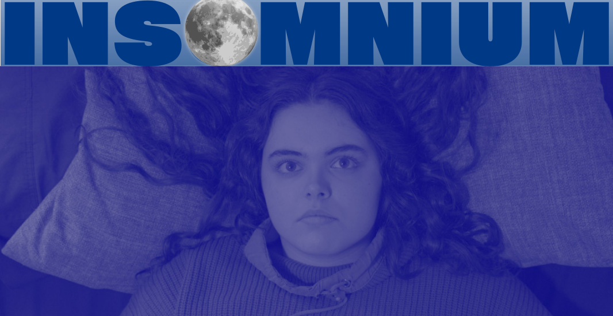

SOMNIUM es una productora comprometida con explorar y mostrar las realidades que conducen al insomnio, revelando las experiencias, e mociones y desafíos que pueden llevar a una persona a enfrentarse con esta condición. A través de nuestras producciones, buscamos crear conciencia sobre los factores que influyen en la calidad del sueño y el impacto que el insomnio tiene en la vida cotidiana. Nuestro objetivo es informar, sensibilizar y ofrecer un espacio donde estas historias sean escuchadas y comprendidas.
ESTRENO DEL DOCUMENTAL

_20241203_212559_0013.png)